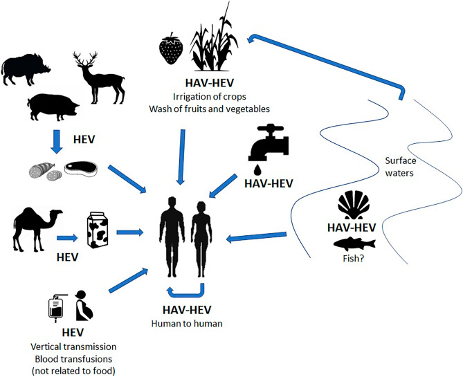
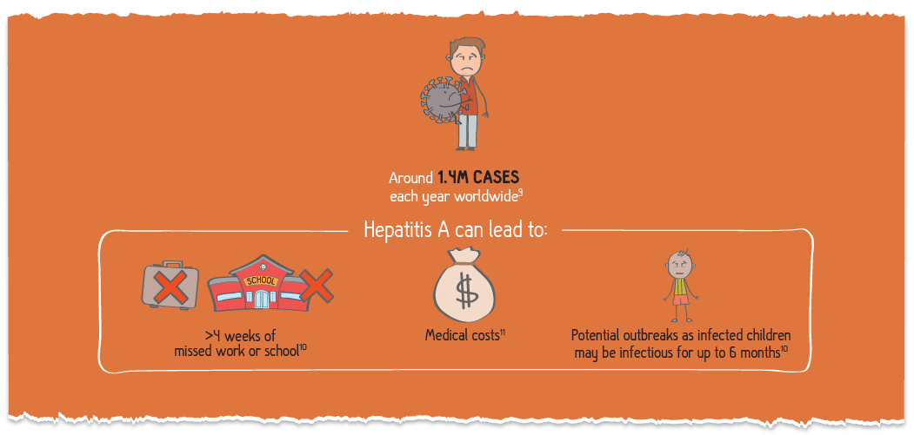

Hepapitis A (HAV)

Virginia, America is the first place where Hepapitits A was discovered
Year Originated
1812
Location of Origin
Viriginia, America
Spread of Virus/Disease
Local Pandemic
Precautions required
Apply Vaccine as soon as possible, stay contact with doctor, have healthy habits such as wash
hand frequently, bath and clean frequently, eat and drink clean, boil and avoid junk food

The hepatitis A virus is transmitted primarily by the faecal-oral route; that is when an uninfected person
ingests food or water that has been contaminated with the faeces of an infected person. In families, this may
happen though dirty hands when an infected person prepares food for family members. Waterborne outbreaks, though
infrequent, are usually associated with sewage-contaminated or inadequately treated water.
The virus can also be transmitted through close physical contact (such as oral-anal sex) with an infectious
person, although casual contact among people does not spread the virus.
Symptoms of Hepapitis A
People with Hepapitis A have reported a wide range of symptoms ranging from mild to severe. Symptoms may
appear approximately 14 up to 28 days after exposure to the virus. Anyone can have mild to severe
symptoms.
Possible symptoms
include:
- Mild fever or chills
- Dark Urine
- Shortness of breath or difficulty breathing
- Fatigue
- Nausea or vomiting
- Diarrhea
- Severe Itching
- Yellow eyes
This list does not include all possible symptoms. Symptoms may change with new Influenza variants and can
vary by person. The CDC will continue to update this list as we learn more about Influenza.
The consequences of Hepapitis A

The impact is mostly on International Food Trade:
In low-income countries, HAV is spread through contaminated water, direct contact with infectious individuals,
and consumption of contaminated foods. Because these transmission pathways all relate to water, sanitation, and
hygiene, it may be impossible to isolate the particular exposure responsible for causing a cluster of hepatitis
A cases. In high-income countries, where safe drinking water is routinely available, it is more feasible to
identify the specific food items that cause outbreaks. The two primary food groups linked to outbreaks of
hepatitis A are produce and seafood (Greig and Ravel 2009), including frozen berries, green onions, lettuce,
oysters, clams, and mussels (Acheson and Fiore 2004). The World Health Organization’s Foodborne Disease Burden
Epidemiology Reference Group estimated that more than 90,000 people worldwide died of hepatitis A disease in
2010 and that nearly 30,000 of those deaths could be directly attributed to foodborne acquisition of HAV (Kirk
et al. 2015).
Although most foodborne outbreaks of hepatitis A are small, affecting only a few dozen or several hundred
people, these outbreaks can become widespread. In 1988, nearly 300,000 people in Shanghai contracted HAV by
eating raw clams, a popular delicacy that had been consumed by nearly one-third of the city’s residents in the
month before the outbreak began (Halliday et al. 1991). In 2003, more than 600 people contracted HAV from a
single restaurant in Pennsylvania, in the United States, by eating contaminated green onions that had been
imported from Mexico (Wheeler et al. 2005).
International trade in foods is accelerating. For example, in the United States, the proportion of consumed food
that is imported from other countries increased from 12% in 1990 to 20% in 2013; this proportion increased from
56% to 97% for fish and shellfish, from 31% to 49% for fruits and nuts, and from 4% to 20% for vegetables
(Jerardo 2016). The number of foodborne outbreaks in the United States rose steadily as the proportion of food
that is imported increased (Gould et al. 2017). Although not all foodborne outbreaks of hepatitis A in
high-income countries are caused by imported foods, the risk of HAV contamination is elevated when foods are
procured from low- or middle-income countries that are HAV-endemic.
Globalization is expected to increase the number of foodborne outbreaks in high-income countries, and there is
already evidence of this change occurring. For example, frozen berries have caused numerous outbreaks of
hepatitis A in Europe. In one large outbreak that occurred between January 2013 and August 2014, more than 1100
people in Italy, Germany, Norway, and 10 other European countries were hospitalized with hepatitis A disease.
Some of the cases were travelers to Italy, but most were people who had not traveled outside of their home
countries in the months before they became ill. Molecular characterization and trace-back investigations linked
the outbreak to Bulgarian blackberries and Polish red currants that had been added to mixed berry products
(Severi et al. 2015). Bulgaria is classified as an upper-middle-income country, unlike its high-income
neighbors, and the 86% rate of access to improved sanitation facilities in Bulgaria in 2015 was considerably
lower than the 99% European average (UNICEF/WHO 2015). The fruit products likely became contaminated as a result
of poor worker hygiene or the spraying of produce with irrigation water that contained raw sewage (Tavoschi et
al. 2015). At the same time that this large outbreak was occurring, separate multicountry hepatitis A outbreaks
in other parts of Europe were linked to strawberries imported from Egypt and Morocco (Gossner and Severi 2014).
Foodborne outbreaks of HAV in other parts of the world have also been reported with increasing frequency. A
multistate outbreak in the United States in 2013 was attributed to imported frozen pomegranate arils from
Turkey, which is classified as an upper middle-income country (Collier et al. 2014). Pomegranate seeds from
Egypt were implicated in an HAV outbreak in Canada in 2012 (Swinkels et al. 2014). Hundreds of Australians
contracted HAV from imported sundried and semidried tomatoes in 2009, and the same strain also caused a
tomato-borne outbreak in the Netherlands in 2009–2010 (Donnan et al. 2012).
Preventing HAV cases caused by imported foods requires improving food-processing practices in source countries.
Globalization provides opportunities to establish, strengthen, and enforce international food safety regulations
and to improve information sharing about hazards (Käferstein et al. 1997). Strategies for reducing the threat
from foodborne infections usually require both exporting and importing countries to be willing to invest
resources in supporting enhanced food protections. Corporations involved in international food production,
manufacturing, and trade can also be incentivized to take steps to better guarantee the quality and safety of
food products. Without improvements, many residents of high- and middle-income countries face an increasing risk
of contracting HAV from food products as global food trade accelerates.
Main Treatment
There is no specific treatment for hepatitis A. Recovery from symptoms following infection may be slow and can
take several weeks or months. It is important to avoid unnecessary medications that can adversely affect the
liver, e.g. acetaminophen, paracetamol.
Hospitalization is unnecessary in the absence of acute liver failure. Therapy is aimed at maintaining comfort
and adequate nutritional balance, including replacement of fluids that are lost from vomiting and diarrhoea.
So far the most obvious way is prepare to have a vaccine during childhood that can help prevent infecting HAV
that lead to Hepapitis A
Discover other virus and how they devastated the society read more to explore
further.
 780,042
780,042
 approximately 64,658
approximately 64,658
 514,287
514,287